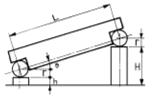
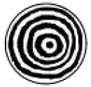
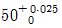
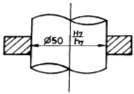
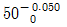
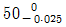
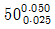
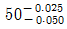

정밀측정산업기사 (2005-03-06 기출문제)
1과목: 정밀계측
1. 측정용 정밀수준기의 감도가 4초 가 되도록 설계하고자 한다. 기포관 1 눈금의 크기는 얼마로 해야 하는가? (단, 기포관의 곡률 반경은 103 m 로 한다.)
- 2.5 mm
- 2.3 mm
- 2 mm
- 1.75 mm
(정답률: 71%)

2. 다음 중 석정반의 장점이 아닌 것은?
- 수명이 길다.
- 밀착이 잘된다.
- 경년 변화가 없다.
- 돌기가 생기지 않는다.
(정답률: 87%)
3. 눈금 원판과 2개의 곧은자(straight edge)로 이루어져 부품의 2면사이의 각도를 측정하는 각도 측정기는?
- 요한슨 각도기
- N.P.L 각도기
- 경사식 각도기
- 만능 각도기
(정답률: 78%)
4. 공장에서 내경을 정밀하게 다량으로 검사할 때 다음 중 가장 적합한 것은?
- 곡률 게이지
- 공기 마이크로미터
- 단체형 내측 마이크로미터
- 3점식 내측 마이크로미터
(정답률: 82%)
5. 그림과 같이 L= 100mm의 사인바로 θ=15°를 구하려고 한다. h=5mm 이면 높이 H 는 몇 mm 인가?

- 20.8819
- 25.7949
- 30.8819
- 35.7949
(정답률: 69%)
6. 축용 한계게이지가 아닌 것은?
- 플러그 게이지
- 스냅 게이지
- C형 스냅 게이지
- 링 게이지
(정답률: 76%)
7. 다음 중 버니어 캘리퍼스로 측정할 수 없는 것은?
- 단차측정
- 내경측정
- 외경측정
- 나사유효지름 측정
(정답률: 98%)
8. 다이얼 게이지로 원통체의 공작물의 진원도를 측정하고자 할 때 필요한 공구는?
- V 블록
- 사인 바
- 마이크로미터
- 캘리퍼스
(정답률: 86%)
9. 매뉴얼식 3 차원 측정기로 구멍간 중심거리를 측정하려고 한다. 다음 프로브 중에 가장 능률적으로 측정할 수 있는 것은?
- 볼형
- 테이퍼형
- 원통형
- 디스크형
(정답률: 70%)
10. 다음 중 비교 측정기가 아닌 것은?
- 다이얼 게이지
- 지시 측미기
- 사인바
- 전기 마이크로미터
(정답률: 82%)
11. 다음 중 다이얼 게이지의 특성이 아닌 것은?
- 시차가 크다.
- 측정 범위가 넓다.
- 다원 측정이 가능하다.
- 직접 측정이 가능하다.
(정답률: 71%)
12. 감도(Sensitivity)에 대한 설명 중 틀린 것은?
- 측정기의 눈금 표시량의 변화를 측정량의 변화로 나눈값이다.
- 일반적으로 감도가 높으면 측정 범위는 좁아진다.
- 동일 조건하에서 일정한 측정량의 변화에 대한 지시눈금 변화의 정도이다.
- 지시값에 명확한 변화를 줄 수 있는 측정량의 최소 변화이다.
(정답률: 67%)
13. 공구 현미경에서 1.5배인 대물렌즈로 75배로 확대시켰다면 접안렌즈의 배율은 얼마인가?
- 112.5 배
- 75 배
- 50 배
- 15 배
(정답률: 80%)
14. 다음 중 암나사의 유효지름 측정이 가능한 측정기는?
- 만능측정기
- 오토콜리메이터
- 투영기
- 하이트마이크로미터
(정답률: 84%)
15. 공구현미경을 이용하여 원통의 지름을 측정하려 한다. 렌즈의 초점거리가 100mm, 공작물의 지름이 16mm라 하면 최적 조리개의 직경은 대략 몇 mm 인가?
- 6.0
- 6.5
- 7.3
- 7.8
(정답률: 67%)
16. 이미 치수를 알고 있는 기준편과의 차를 이용하여 측정값을 구하는 측정방법은?
- 비교측정
- 직접측정
- 절대측정
- 간접측정
(정답률: 92%)
17. 다음 중 아베의 원리에 맞는 측정기는?
- 버니어 캘리퍼스
- 브리지 이동형 3차원측정기
- 단체(봉)형 내측 마이크로미터
- 캘리퍼형 내측 마이크로미터
(정답률: 81%)
18. 광선정반(光線定盤)에 그림과 같은 형상의 무늬가 5개일 때에 사용 광선의 파장이 0.4μm 이면 중심부와 원 모서리의 높이차는 몇 μm 인가?

- 2.0
- 1.2
- 1.0
- 0.6
(정답률: 74%)
19. 다음 중 마이크로 미터의 측정면 평행도 검사시 가장 적합한 공구는?
- 옵티컬 패러렐
- 옵티컬 플랫
- 다이얼 게이지
- 정반
(정답률: 85%)
20. 다음 게이지 중 내경을 측정할 수 없는 것은?
- 실린더 게이지(cylinder gage)
- 공기 마이크로미터(air micrometer)
- 식크니스 게이지(thickness gage)
- 텔레스코핑 게이지(telescoping gage)
(정답률: 80%)
2과목: 재료시험법
21. 정적 인장시험에서 충격치와 가장 밀접한 관계가 있는 것은?
- 인장강도
- 탄성계수
- 항복강도
- 연율
(정답률: 73%)
22. 연강을 인장시험 했을 때 최대강도의 하중이 300kg 이고, 파괴시의 단면적은 4.5cm2, 본래의 단면적이 6cm2일 때, 이 시험편의 인장 강도는?
- 45 kg/cm2
- 50 kg/cm2
- 55 kg/cm2
- 60 kg/cm2
(정답률: 74%)
23. 다음 브리넬 경도에 대한 설명이 잘못된 것은?
- 브리넬 경도시험법은 경도치가 500을 넘지 않는 것에 적용한다.
- 지름 5㎜ 와 10㎜의 강구 압입자(=압자) 사용하여 시험한다.
- 오목부의 지름을 0.2∼0.5D가 되는 것이 가장적당하다.
- 하중을 규정의 크기로 유지하는 시간은 30초를 표준으로 한다.
(정답률: 72%)
24. 다음 중 반발경도 시험법을 사용하는 경도계는?
- 쇼어 경도계
- 로크웰 경도계
- 비커스 경도계
- 마이어 경도계
(정답률: 81%)
25. 비커스 경도 시험에 사용하는 피라미드 압자의 각도는?
- 96°
- 120°
- 136°
- 140°
(정답률: 88%)
26. 다음 중 주로 강성계수 G를 측정하기 위한 시험은?
- 굽힘시험
- 비틀림시험
- 인장시험
- 압축시험
(정답률: 79%)
27. 시험의 주목적이 여린 파괴에 관한 현상을 규명하고자 하는 재료시험은?
- 압축시험
- 경도시험
- 충격시험
- 전단시험
(정답률: 75%)
28. 마모량 측정방법 중 직접적인 측정 방법이 아닌 것은?
- 시편의 질량변화로 구하는 방법
- 시편의 길이나 단면적의 변화로 구하는 방법
- 마찰시간에 따른 마모량을 구하는 방법
- 마모에 의해 손실된 재료의 부피로 구하는 방법
(정답률: 66%)
29. 에릭센 시험은 다음 어떤 재료의 성질을 알아 보기 위한 시험인가?
- 각종 재료의 전단성을 측정
- 판재의 연성을 측정
- 탄소강의 파단을 측정
- 봉재의 연신율 측정
(정답률: 80%)
30. 항절시험은 어떤 시험에 속하는가?
- 인장시험
- 충격시험
- 전단시험
- 굽힘시험
(정답률: 65%)
31. 일반적인 시험편의 준비가 올바른 것은?
- 시험편채취 → 연마 → 폴리싱 → 세척 → 부식
- 시험편절단 → 세척 → 연마 → 폴리싱 → 부식
- 시험편채취 → 세척 → 연마 → 폴리싱 → 부식
- 시험편절단 → 연마 → 세척 → 폴리싱 → 부식
(정답률: 73%)
32. 비틀림시험에서 변형량은 다음 중 어느 것을 측정하여 구하는가?
- 표점거리에 연신량
- 하중을 가하는 속도
- 비틀림각
- 하중의 크기
(정답률: 85%)
33. 노치부의 초기단면적이 0.8cm2인 시편을 절단하는 데 필요한 에너지를 30 kgf∙m라 할 때 샤르피 충격치의 표시는 몇 kgf∙m/cm2인가?
- 0.03
- 0.8
- 24.0
- 37.5
(정답률: 51%)
34. 콘크리트, 베어링강을 재료시험 하고자 한다. 어떤 시험이 가장 적당한가？
- 비틀림 시험
- 압축 시험
- 굽힘 시헙
- 인장 시험
(정답률: 81%)
35. 로크웰경도시험에서 시험편에 관한 사항 중 틀린 것은?
- 시험편의 두께는 압입깊이의 10배 이상이어야 한다.
- 시험편은 견고한 지지대 위에 밀착되어야 한다.
- 하중은 시험편과 수직하게 전달되지 않아도 된다.
- 시험편의 표면은 산화물이나 불순물이 있어서는 안된다.
(정답률: 82%)
36. 피로시험에서 응력집중계수(α)가 1.4 이고, 노치계수(β)가 1.2 일 때 노치민감계수는?
- 0.1
- 0.3
- 0.5
- 0.7
(정답률: 65%)
37. 인장시편의 중앙부에 일정한 간격으로 금긋기한 부분을 무엇이라 하는가?
- 신연거리
- 표점거리
- 파단길이
- 인장길이
(정답률: 91%)
38. 굽힘시험에서 구할 수 없는 것은?
- 굽힘강도
- 탄성계수
- 전성과 연성
- 인장강도
(정답률: 75%)
39. 다음 중 재료를 파괴할 때 인성(toughness) 또는 취성(brittleness)을 시험하는 것은?
- 전단시험(shearing test)
- 충격시험(impact test)
- 굽힘시험(bending test)
- 피로시험(fatigue test)
(정답률: 78%)
40. 재료시험기의 구비 조건이 잘못 설명된 것은?
- 정밀도 및 감도가 우수할 것
- 조작이 간편하고 정밀한 검사가 가능할 것.
- 항상 동일한 측정치가 보장될 것.
- 광범위한 측정이 가능할 것.
(정답률: 73%)
3과목: 도면해독
41. 기하학적 특성을 적용할 때, 재료조건에 대한 설명 중 옳은 것은?
- MMS란 구멍의 경우 최대치수를 의미한다.
- 축의 MMS란 축의 최대치수를 의미한다.
- 홈의 치수에 RFS로 규제되었을 때에는 홈의 기준 치수를 의미한다.
- 돌출부의 폭의 치수를 LMS로 규제했을 때에는 돌출부의 최대치수를 의미한다.
(정답률: 70%)
42. KS 규격에서 가공방법의 기호이다. 잘못된 것은?
- FR - 리밍(reaming)
- M - 밀링(milling)
- D - 보링(boring)
- FS - 스크레이핑(scraping)
(정답률: 77%)
43. 다음과 같이 구멍과 축의 끼워맞춤을 표기할 때 나타낸 치수 중 ø50H7의 공차가

일 때 ø50h7의 공차는 얼마가 되겠는가?




(정답률: 86%)
44. 데이텀을 선정하는데 일반적인 원칙이 아닌 것은?
- 기능적인 형체를 데이텀으로 선정한다.
- 데이텀은 정확하다고 가정되는 평면만을 선정한다.
- 결합되는 상대 부품과의 기준이 되는 형체를 데이텀으로 선정한다.
- 가공, 검사 및 측정상 기준을 데이텀으로 선정한다.
(정답률: 75%)
45. 축의 실효치수에 대하여 맞게 설명한 것은?
- 축의 MMS치수 + 형상공차
- 축의 LMS치수 + 형상공차
- 축의 MMS치수 - 형상공차
- 축의 LMS치수 - 형상공차
(정답률: 77%)
46. 다음 KS제도기호 중 평면도를 표시하는 것은?

(정답률: 85%)
47. 기하형상공차 적용에 대해 설명한 것 중 맞는 것은?
- 진직도 공차는 원통 표면의 모든 길이 방향과 축선에 대해 규정한 것이다.
- 축의 실효치수는 축의 MMS 치수에서 형상 또는 위치 공차를 더한 것이다.
- 진원도는 공통 중심에 대해 축심을 규제한 것이다.
- 경사도는 90°를 포함한 모든 임의의 각도를 갖는 표면이나 형체를 규제한 것이다.
(정답률: 76%)
48. 기계재료를 표시하는 재료기호는 크게 3부분으로 나눌 수 있다. 그 중 처음 부분은 무엇을 나타내는가?
- 제품명
- 재질
- 인장강도
- 제품형상기호
(정답률: 77%)
49. 제도에서 가능한 한 치수는 어느 곳에 기입 하는가?
- 정면도
- 조립도
- 측면도
- 평면도
(정답률: 78%)
50. 다음은 투상법칙에 대한 설명이다. 틀린 것은?
- 투상면에 평행한 직선은 실제 길이로 나타낸다.
- 투상면에 수직인 직선은 점이 된다.
- 투상면에 경사진 직선은 실제 길이보다 길게 나타난다.
- 투상면에 경사진 평면은 실제보다 축소되어 나타난다.
(정답률: 71%)
51. 체인, 기어등에서 피치원을 나타낼 때 쓰이는 선으로 맞는 것은?
- 실선
- 은선
- 일점쇄선
- 이점쇄선
(정답률: 75%)
52. 동심도 공차에 대한 설명 중 틀린 것은?
- 반드시 데이텀을 기준으로 적용한다.
- 공차앞에 직경기호 φ를 표시한다.
- 항상 RFS에서 규제한다.
- 축심사이의 거리로 측정한다.
(정답률: 57%)
53. 기하공차의 종류를 크게 자세공차, 위치공차 및 흔들림 공차로 분류하면, 위치공차에 해당되는 것은?
- 평행도 공차
- 직각도 공차
- 온흔들림 공차
- 동심도 공차
(정답률: 79%)
54. 최대재료조건(MMC)을 나타내는 형상공차기호는? 복원중(문제 오류로 복원중입니다. 정확한 내용을 아시는 분께서는 오류신고를 통하여 내용 작성 부탁 드립니다. 정답은 1번입니다.)
- 복원중(정확한 보기 내용을 아시는분께서는 오류 신고를 통하여 내용 작성부탁 드립니다.)
- 복원중(정확한 보기 내용을 아시는분께서는 오류 신고를 통하여 내용 작성부탁 드립니다.)
- 복원중(정확한 보기 내용을 아시는분께서는 오류 신고를 통하여 내용 작성부탁 드립니다.)
- 복원중(정확한 보기 내용을 아시는분께서는 오류 신고를 통하여 내용 작성부탁 드립니다.)
(정답률: 75%)
55. 형태 규제 기호 중 데이텀을 필요로 하는 것은?
(정답률: 76%)
56. 기하공차 기호 는 무엇을 나타내는가?
- 대칭도
- 평행도
- 흔들림
- 임의의 선의윤곽도
(정답률: 85%)
57. 선의 윤곽에서 기하 공차표기가 올바르게 나타난 것은?
(정답률: 83%)
58. 기하학적 형상공차를 나타낸 기호 중 MMC에 적용되는 것은?

(정답률: 72%)
59. 기하학적 형상 공차 중 데이텀을 필요로 하는 것은?
(정답률: 79%)
60. 다음 용어 해설 중 틀린 것은?
- 치수차란 치수(실치수)와 대응하는 기준치수와의 대수차이다.
- 기본공차란 최대 허용치수와 최소허용치수와의 차이이다.
- 위 치수허용차는 최대 허용치수와 대응하는 기준 치수와의 대수차이다.
- 아래 치수허용차는 최소 허용치수와 대응하는 기준치수와의 대수차이다.
(정답률: 72%)
4과목: 정밀가공학
61. 다음 중 CNC 와이어 컷 방전에서 발생되는 큰 북형상의 극소화 대책으로 가장 적합한 방법은?
- 와이어의 장력을 세게하여 전극의 진동을 억제시킨다.
- 가공액의 비저항값을 낮게 설정하여 가공속도를 상승 시킨다.
- 2차가공을 실시하여 큰북 형상을 수정한다.
- 진동의 감소방법의 하나로 방전 에너지를 적게 한다.
(정답률: 71%)
62. 래핑의 일반적인 특성 설명으로 틀린 것은?
- 마모현상을 기계가공에 응용한 것이다.
- 래핑방식은 습식법을 사용하며, 건식법은 부식 때문에 사용하지 않는다.
- 정밀도가 높은 제품을 만들 수 있다.
- 비산하는 랩제가 다른 기계나 제품에 부착하면 마모시키는 원인이 된다.
(정답률: 77%)
63. GC 70 H m V 의 연삭 숫돌 표시에서 'H'는 무엇을 표시하는가?
- 입도
- 결합도
- 조직
- 결합제
(정답률: 77%)
64. 밀링에서 사용되는 분할방법이 아닌 것은?
- 직접분할
- 단식분할
- 간접분할
- 차동분할
(정답률: 66%)
65. 방전가공을 설명한 것으로 올바른 것은?
- 전기분해에 의하여 양극금속의 용해를 응용한 것이다.
- 화학 반응을 일으켜 가공하는 것이다.
- 다이어몬드, 루비, 사파이어 등의 가공에 알맞다.
- 자기변형을 응용한 가공법이다.
(정답률: 66%)
66. 선반의 양 센터 작업에서 필요하지 않는 부속품은?
- 돌리개(dog)
- 돌림판(driving plate)
- 센터(center)
- 방진구(work rest)
(정답률: 78%)
67. 스프링과 같이 반복 하중을 받는 기계부품의 완성 가공에 이용되는 가공법은?
- 액체 호닝
- 숏 피닝
- 버어니싱
- 전해연마
(정답률: 72%)
68. 선반에서 백 기어를 설치하는 가장 중요한 목적인 것은?
- 주축의 변환속도의 폭을 2배로 넓히기 위해서
- 주축을 반대방향으로 회전시키기 위해서
- 소비 동력을 반으로 줄이기 위해서
- 가공시간을 단축하기 위해서
(정답률: 58%)
69. 모듈 5, 이빨 수 41개인 표준 평기어(spur gear) 소재의외경을 선반에서 가공하려고 할 때, 이 소재의 가공치수는 얼마로 하여야 하는가?
- 2⑤ mm
- 210 mm
- 215 mm
- 220 mm
(정답률: 51%)
70. 일반적인 선삭 가공시 가공면이 가장 매끄러운 칩(chip)의 형태는?
- 열단형(tear type)
- 유동형(flow type)
- 균열형(crack type)
- 전단형(shear type)
(정답률: 84%)
71. 센터리스 연삭기에서 조정 숫돌차의 외경이 400mm, 회전수 30rpm, 경사각 4°일 때 이송속도는 몇 m/min 인가?
- 1.04
- 2.63
- 5.55
- 10.60
(정답률: 71%)
72. 지름 125mm의 총형커터로 주강을 절삭할 때 커터의 회전수는 얼마인가? (단, 주강의 절삭속도는 50m/min 이다.)
- 113rpm
- 150rpm
- 127rpm
- 147rpm
(정답률: 74%)
73. 다음 중 고속도강 바이트의 연삭에 가장 적합한 숫돌은?
- GC숫돌
- WA숫돌
- A숫돌
- C숫돌
(정답률: 79%)
74. 버핑 머신은 무엇을 할 때 사용하는 기계인가?
- 녹을 제거하거나 광내기 작업을 할 때
- 밀링 커터를 만들 때
- 방전가공시
- 금속에 조각을 할 때
(정답률: 81%)
75. 다음은 공구위치보정에 관한 G-코드이다. 공구 보정량 신장에 해당하는 G-코드는?
- G45
- G46
- G47
- G48
(정답률: 64%)
76. 절삭 가공 중 회전공구에 의한 절삭 가공이 아닌 것은?
- 밀링(milling)
- 드릴링(drilling)
- 호빙(hobbing)
- 브로칭(broaching)
(정답률: 78%)
77. 직경 8mm 드릴로 깊이 20mm인 구멍을 5개 뚫을 때 주축 회전수는? (단, 절삭속도는 30m/min 이다)
- 125rpm
- 188rpm
- 750rpm
- 1194rpm
(정답률: 66%)
78. NC 공작기계에 쓰이는 준비기능(G code)과 보조기능 (M code)을 틀리게 설명한 것은?
- 준비기능 - DC모터를 구동
- 보조기능 - AC모터를 구동, 기계의 제반 ON/OFF 역할
- 보조기능 - 범용공작기계에서 사람의 판단기능에 해당
- 준비기능 - 범용공작기계에서 사람의 핸들 이송에 해당
(정답률: 70%)
79. 피삭재를 절삭할 때 바이트 날끝의 고온, 고압 때문에 칩이 융착되어 공구 날 끝 첨단에 붙어 있게 되는 구성인선(built-up edge)의 생성에서 소멸과정을 올바르게 나열된 것은?
- 발생 → 분열 → 성장 → 탈락
- 발생 → 탈락 → 성장 → 분열
- 발생 → 성장 → 탈락 → 분열
- 발생 → 성장 → 분열 → 탈락
(정답률: 81%)
80. 브로칭 머신에 대한 설명으로 틀린 것은?
- 가공방법으로는 인발식과 삽입식이 있다.
- 다수의 날을 일직선상에 배치한 공구를 사용한다.
- 공작물의 내면이나 표면을 여러 모양으로 가공할 수 있다.
- 호환성을 필요로 하는 부품의 대량 생산에는 사용할 수 없다.
(정답률: 75%)
감도 = (기포관의 눈금 크기) / (곡률 반경)
따라서, 감도가 4초가 되도록 하려면 눈금 크기를 최소한으로 만들어야 한다. 곡률 반경이 103m 이므로,
눈금 크기 = (감도) x (곡률 반경) = 4초 x 103m = 412mm
따라서, 기포관 1 눈금의 크기는 2mm 가 되어야 한다.